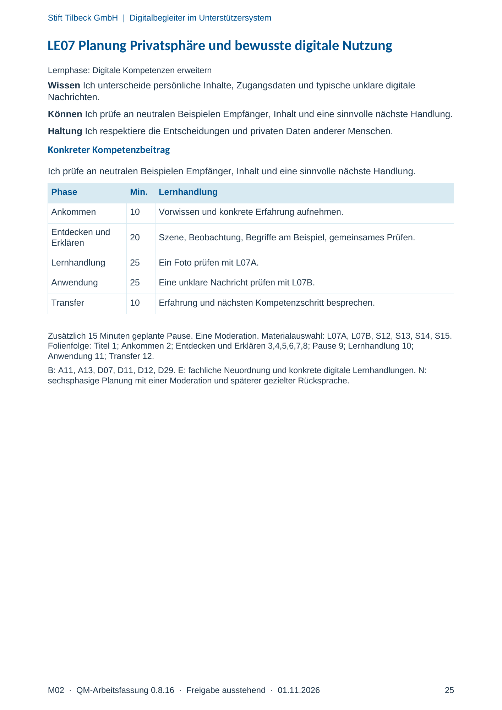
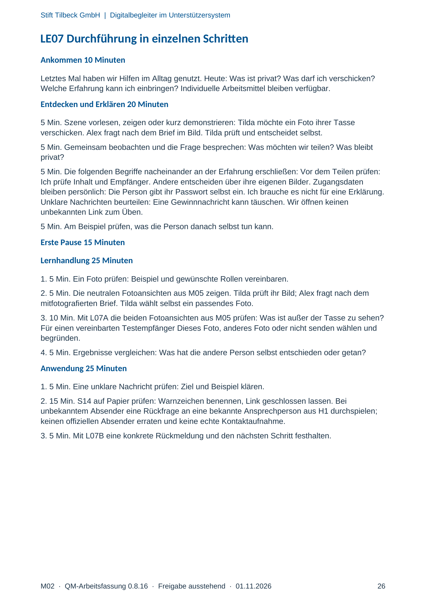
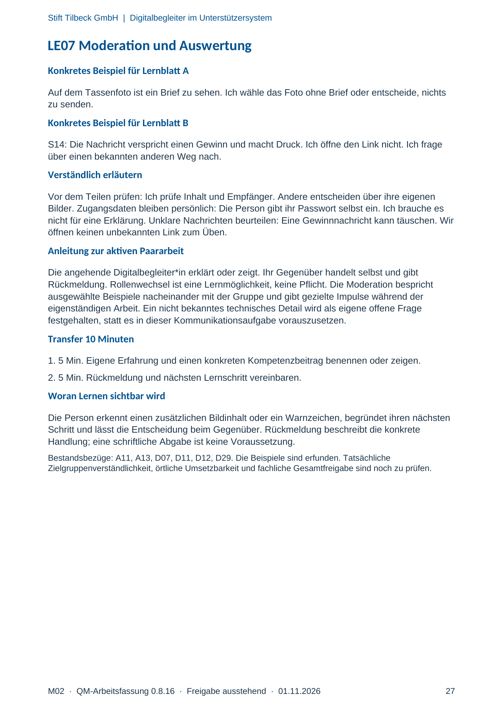

M02 · Originalseite 25, 26, 27
Handbuch und Muster
Gezielte Original-Druckauswahl.
Fragen und Ankreuzfelder werden auf dem Ausdruck bearbeitet. Die Lesefassung speichert keine Antworten.
Lesefassung · Seite 25
Stift Tilbeck GmbH | Digitalbegleiter im Unterstützersystem
LE07 Planung Privatsphäre und bewusste digitale Nutzung
Lernphase: Digitale Kompetenzen erweitern
Wissen Ich unterscheide persönliche Inhalte, Zugangsdaten und typische unklare digitale
Nachrichten.
Können Ich prüfe an neutralen Beispielen Empfänger, Inhalt und eine sinnvolle nächste Handlung.
Haltung Ich respektiere die Entscheidungen und privaten Daten anderer Menschen.
Konkreter Kompetenzbeitrag
Ich prüfe an neutralen Beispielen Empfänger, Inhalt und eine sinnvolle nächste Handlung.
Phase Min. Lernhandlung
Ankommen 10 Vorwissen und konkrete Erfahrung aufnehmen.
Entdecken und
Erklären 20 Szene, Beobachtung, Begriffe am Beispiel, gemeinsames Prüfen.
Lernhandlung 25 Ein Foto prüfen mit L07A.
Anwendung 25 Eine unklare Nachricht prüfen mit L07B.
Transfer 10 Erfahrung und nächsten Kompetenzschritt besprechen.
Zusätzlich 15 Minuten geplante Pause. Eine Moderation. Materialauswahl: L07A, L07B, S12, S13, S14, S15.
Folienfolge: Titel 1; Ankommen 2; Entdecken und Erklären 3,4,5,6,7,8; Pause 9; Lernhandlung 10;
Anwendung 11; Transfer 12.
B: A11, A13, D07, D11, D12, D29. E: fachliche Neuordnung und konkrete digitale Lernhandlungen. N:
sechsphasige Planung mit einer Moderation und späterer gezielter Rücksprache.
Originalseite ansehen

Lesefassung · Seite 26
Stift Tilbeck GmbH | Digitalbegleiter im Unterstützersystem
LE07 Durchführung in einzelnen Schritten
Ankommen 10 Minuten
Letztes Mal haben wir Hilfen im Alltag genutzt. Heute: Was ist privat? Was darf ich verschicken?
Welche Erfahrung kann ich einbringen? Individuelle Arbeitsmittel bleiben verfügbar.
Entdecken und Erklären 20 Minuten
5 Min. Szene vorlesen, zeigen oder kurz demonstrieren: Tilda möchte ein Foto ihrer Tasse
verschicken. Alex fragt nach dem Brief im Bild. Tilda prüft und entscheidet selbst.
5 Min. Gemeinsam beobachten und die Frage besprechen: Was möchten wir teilen? Was bleibt
privat?
5 Min. Die folgenden Begriffe nacheinander an der Erfahrung erschließen: Vor dem Teilen prüfen:
Ich prüfe Inhalt und Empfänger. Andere entscheiden über ihre eigenen Bilder. Zugangsdaten
bleiben persönlich: Die Person gibt ihr Passwort selbst ein. Ich brauche es nicht für eine Erklärung.
Unklare Nachrichten beurteilen: Eine Gewinnnachricht kann täuschen. Wir öffnen keinen
unbekannten Link zum Üben.
5 Min. Am Beispiel prüfen, was die Person danach selbst tun kann.
Erste Pause 15 Minuten
Lernhandlung 25 Minuten
1. 5 Min. Ein Foto prüfen: Beispiel und gewünschte Rollen vereinbaren.
2. 5 Min. Die neutralen Fotoansichten aus M05 zeigen. Tilda prüft ihr Bild; Alex fragt nach dem
mitfotografierten Brief. Tilda wählt selbst ein passendes Foto.
3. 10 Min. Mit L07A die beiden Fotoansichten aus M05 prüfen: Was ist außer der Tasse zu sehen?
Für einen vereinbarten Testempfänger Dieses Foto, anderes Foto oder nicht senden wählen und
begründen.
4. 5 Min. Ergebnisse vergleichen: Was hat die andere Person selbst entschieden oder getan?
Anwendung 25 Minuten
1. 5 Min. Eine unklare Nachricht prüfen: Ziel und Beispiel klären.
2. 15 Min. S14 auf Papier prüfen: Warnzeichen benennen, Link geschlossen lassen. Bei
unbekanntem Absender eine Rückfrage an eine bekannte Ansprechperson aus H1 durchspielen;
keinen offiziellen Absender erraten und keine echte Kontaktaufnahme.
3. 5 Min. Mit L07B eine konkrete Rückmeldung und den nächsten Schritt festhalten.
Originalseite ansehen

Lesefassung · Seite 27
Stift Tilbeck GmbH | Digitalbegleiter im Unterstützersystem
LE07 Moderation und Auswertung
Konkretes Beispiel für Lernblatt A
Auf dem Tassenfoto ist ein Brief zu sehen. Ich wähle das Foto ohne Brief oder entscheide, nichts
zu senden.
Konkretes Beispiel für Lernblatt B
S14: Die Nachricht verspricht einen Gewinn und macht Druck. Ich öffne den Link nicht. Ich frage
über einen bekannten anderen Weg nach.
Verständlich erläutern
Vor dem Teilen prüfen: Ich prüfe Inhalt und Empfänger. Andere entscheiden über ihre eigenen
Bilder. Zugangsdaten bleiben persönlich: Die Person gibt ihr Passwort selbst ein. Ich brauche es
nicht für eine Erklärung. Unklare Nachrichten beurteilen: Eine Gewinnnachricht kann täuschen. Wir
öffnen keinen unbekannten Link zum Üben.
Anleitung zur aktiven Paararbeit
Die angehende Digitalbegleiter*in erklärt oder zeigt. Ihr Gegenüber handelt selbst und gibt
Rückmeldung. Rollenwechsel ist eine Lernmöglichkeit, keine Pflicht. Die Moderation bespricht
ausgewählte Beispiele nacheinander mit der Gruppe und gibt gezielte Impulse während der
eigenständigen Arbeit. Ein nicht bekanntes technisches Detail wird als eigene offene Frage
festgehalten, statt es in dieser Kommunikationsaufgabe vorauszusetzen.
Transfer 10 Minuten
1. 5 Min. Eigene Erfahrung und einen konkreten Kompetenzbeitrag benennen oder zeigen.
2. 5 Min. Rückmeldung und nächsten Lernschritt vereinbaren.
Woran Lernen sichtbar wird
Die Person erkennt einen zusätzlichen Bildinhalt oder ein Warnzeichen, begründet ihren nächsten
Schritt und lässt die Entscheidung beim Gegenüber. Rückmeldung beschreibt die konkrete
Handlung; eine schriftliche Abgabe ist keine Voraussetzung.
Bestandsbezüge: A11, A13, D07, D11, D12, D29. Die Beispiele sind erfunden. Tatsächliche
Zielgruppenverständlichkeit, örtliche Umsetzbarkeit und fachliche Gesamtfreigabe sind noch zu prüfen.
Originalseite ansehen
